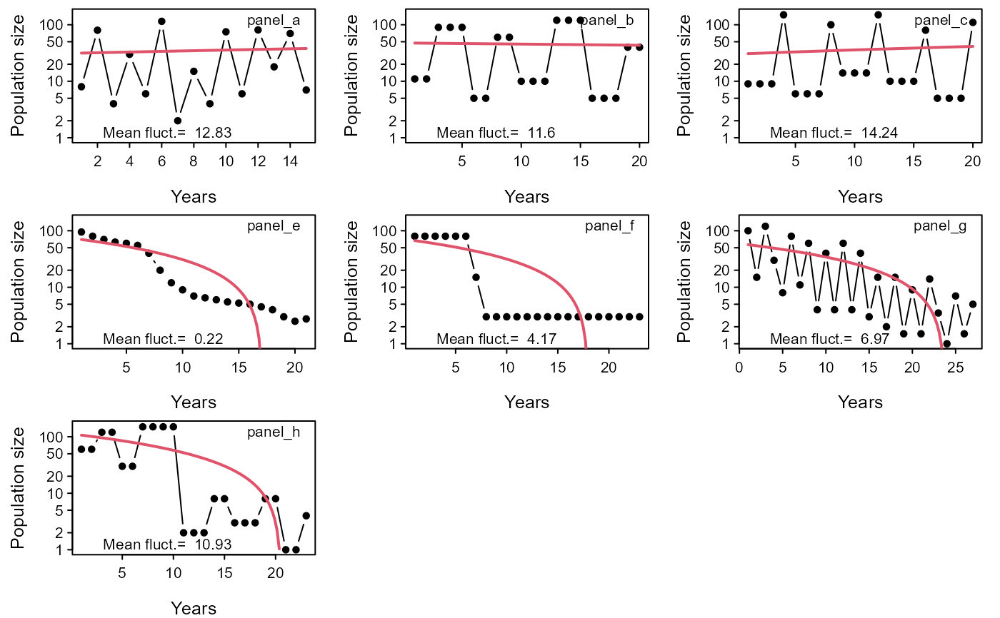

Based on a time series of population sizes, this function try to tell appart extreme fluctuations from directional population changes.
pop.fluctuation(x, years = NULL, plot.test = TRUE)a vector (one species) or a data frame (multiple species/ subpopulations) containing the population sizes (e.g. number of mature individuals) per year, from the oldest to the most recent estimate.
a vector containing the years for which the population sizes is available (i.e. time series).
logical. Should the the results be plotted with the population data?
A data frame containing the mean change of the population ("Magnitude.fluctuation"), the percentage of intervals presenting population increases followed by decreases ("Alternance.prop"), the result of a test for the presence of directional changes in the population size ("Direct.change"), and the Standard Error Estimate of the linear regression model fitted to the population trend ("Std.Error.Est.").
This is a basic function that quantifies the mean fluctuation of
population sizes across time, aiming at the detection 'extreme
fluctuations' as defined by IUCN (2019). Here we quantify fluctuations as
the mean change in population size between consecutive years in the time
series (e.g. if t[i]= 9 and t[i+1]= 90, change is 10). As defined in IUCN
(2019), extreme fluctuations are generally characterized by changes higher
than 10 or an order of magnitude.
(Detailed explanation of 'alternance.prop' pending)
The evidence of directional changes is evaluated based on a linear regression model fitted to the population size data. The sign of the slope parameter of the regression is used to assess if population declining or increasing. The confidence interval around the slope estimate is used to evaluated if the declining or increasing tendencies are significant (significance level of 0.05).
The same linear regression model is used to obtain the standard error of the estimate (SEE) of the linear regression fitted to the population trend, which can be used as a measure of the temporal variability in population size (Cuervo & Moller 2017).
IUCN 2019. Guidelines for Using the IUCN Red List Categories and Criteria. Version 14. Standards and Petitions Committee. Downloadable from: https://www.iucnredlist.org/resources/redlistguidelines.
Cuervo, J.J. & Moller, A.P. (2017). Colonial, more widely distributed and less abundant bird species undergo wider population fluctuations independent of their population trend. PloS one, 12(3): e0173220.
## Examples adapted from Figure 4.4 in IUCN (2019)
data("example_fluctuation")
pop.fluctuation(x = example_fluctuation)
#> Warning: The years of the population sizes were not given and were taken from the input population data
#> Magnitude.fluctuation Alternance.prop Direct.change
#> panel_a 12.83 100 non.signif.increase
#> panel_b 11.6 100 non.signif.decline
#> panel_c 14.24 100 non.signif.increase
#> panel_e 0.22 54.55 signif.decline
#> panel_f 4.17 50 signif.decline
#> panel_g 6.97 26.92 signif.decline
#> panel_h 10.93 100 signif.decline
#> Std.Error.Est.
#> panel_a 39.44
#> panel_b 45.59
#> panel_c 51.93
#> panel_e 14.74
#> panel_f 22.08
#> panel_g 26.33
#> panel_h 47.77
